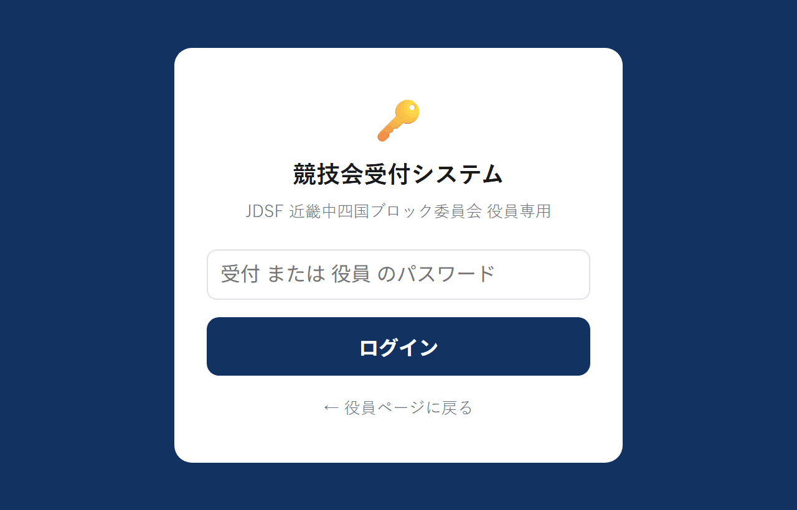
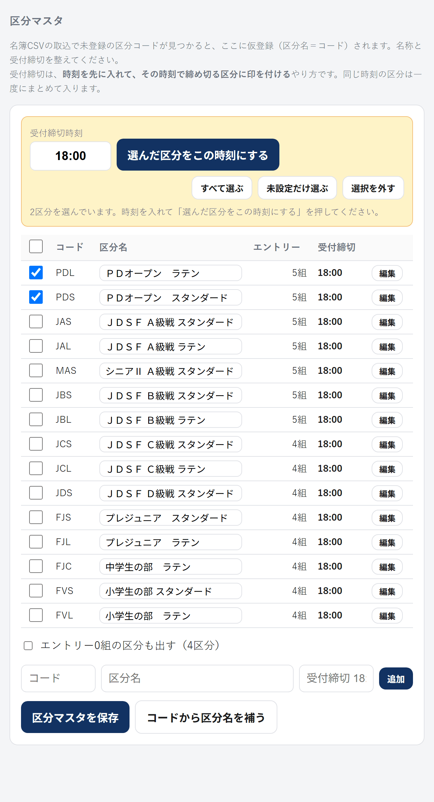
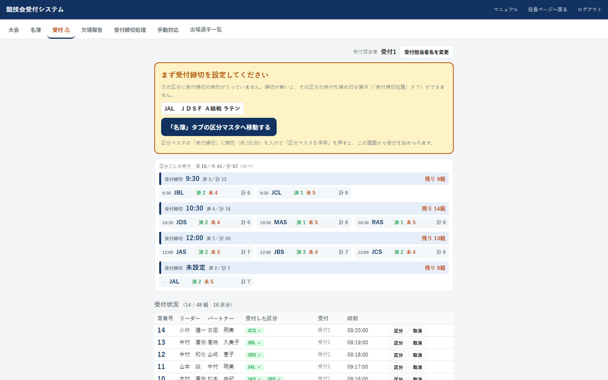
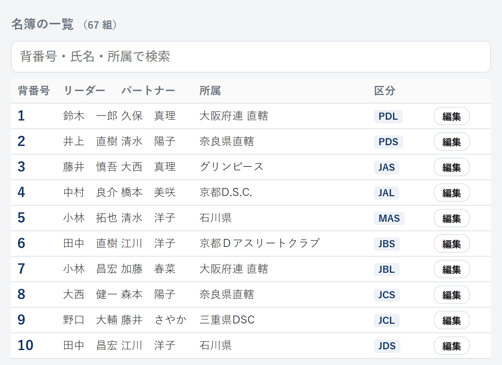
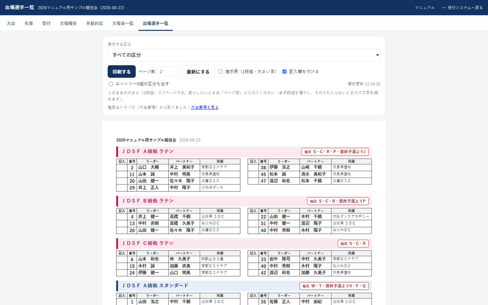
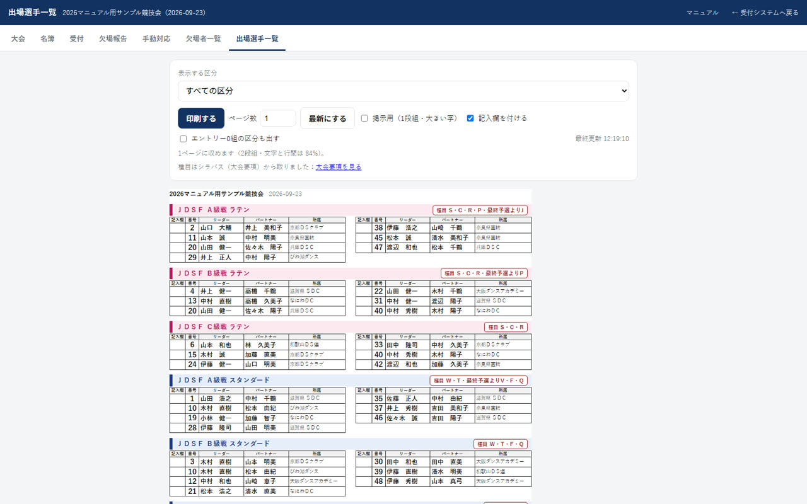

競技会当日の受付を、会場の複数の端末（パソコン・タブレット・スマートフォン）で同時に行うためのシステムです。 受付した内容はすべての端末にすぐ反映され、そのまま欠場者の一覧を作って印刷できます。
このシステムでできること
紙の名簿に丸を付ける代わりに、背番号を入力して受付します。受付は区分ごとに記録されるので、 「スタンダードだけ出てラテンは欠場」といった組も、そのまま扱えます。
| 受付 | 背番号を入れて受付を押すと、その組のすべての区分を受付します。一部の区分だけの組は一部受付から選びます。 |
|---|---|
| 欠場報告 | 区分ごとに「出場」と「欠場」の一覧が自動で出ます。欠場者の背番号が受付に残っているかの確認も記録できます。 |
| 欠場者一覧 | 受付締切の時刻ごとに、欠場した背番号だけを大きく並べたページを印刷できます。進行席へ渡す用です。 |
| 出場選手一覧 | 区分ごとのエントリー名簿です。プログラム（パンフレット）の選手名簿や、会場に貼り出す紙に使えます。 |
| 同時に使える | 受付レーンを分けて、何台の端末からでも同時に受付できます。3秒ごとに自動で最新になります。 |
だれが何をするか（このマニュアルの章立て）
- 【準備】事務局・システム担当 DCSの2つのファイルで大会を作り、受付締切の時刻を入れます（第1章）。
- 【当日】受付担当者 背番号を入れて受付し、欠場者一覧を進行席へ渡します（第2章）。
- 【当日】スクルティニア（ST） 初期振分を済ませたら受付を止めます。止めたあとの件を片づけます（第3章）。
- 【随時】出場選手一覧 プログラム用の名簿づくりや会場掲示に使います（第4章）。
1つの組が複数の区分にエントリーしていることがあります。
第1章 【準備】大会を作って受付できる状態にする
だれが 事務局・システム担当（一人でできます） ／ いつ エントリーと発番が確定してから前日まで
ここが終わっていないと当日受付を始められません。いちばん大事なのは受付締切の時刻です。
1-1 開き方とログイン
ブラウザで https://jdsf-seibu.com/uketsuke.html を開きます。 役員ページの右上のボタン「🎫 競技会受付システム →」からも開けます。

設定は、サイト構築ページのパスワード変更で「受付システム用」を選んで行います。設定していない場合は、役員ページのパスワードでログインします。
押し忘れても、誰も画面を触らないまま4時間たてば自動でログアウトします。 切れる5分前に画面の上に予告が出るので、画面をさわればそのまま続けられます。 受付の合間が空いても切れないよう、長めにしてあります。
1-2 大会を作る（DCSの2ファイル）
エントリーと発番が確定したあと、支援システム（DCS）の担当者から、支援システムのデータフォルダにある 2つのファイル SSS__I.dat と SSS__MEM.dat を受け取ってください。 この2つだけで大会が作れます。選手名簿CSVを書き出す必要はありません。
「大会」タブを開き、「新しい大会を作る」でその2つを選んで作成するを押します。

- SSS__I.dat を選ぶ 大会名・開催日と、区分（コード・名称・並び順）が入っています。
- SSS__MEM.dat を選ぶ 名簿（背番号・氏名・所属・出場区分）が入っています。 2つとも選ぶと、読み取った内容が下に表示されます。
- 「作成する」を押す 大会が作られ、区分と名簿が同時に入ります。
照合にはサイトが毎朝取り込んでいる競技会一覧を使うので、JDSFのサイトへは見に行きません。 一覧にまだ無い大会のときは「見つかりませんでした」と出ますが、他の確認はそのまま使えます。
複製するには、元の大会を合言葉で開いている必要があります（合言葉を知らない人が名簿を複製することはできません）。 できた大会は一覧のいちばん上に出ます。

1-3 受付締切の時刻を入れる
「締切時刻設定」タブを開きます。上半分が区分マスタ（区分の一覧）、下半分が名簿の一覧です。 DCSのファイルから作った大会は、区分がすでに並んでいます（コードも名称もDCSのとおりです）。
受付締切は時刻を先に入れて、その時刻で締め切る区分に印を付けるやり方です。 同じ時刻の区分はまとめて入るので、区分の数だけ打ち込む必要はありません。

- 時刻を入れる 左上の「受付締切時刻」に 18:00 の形で入れます。 1800・18・18：00（全角）のように打っても 18:00 にそろえます。
- 区分に印を付ける その時刻で締め切る区分の左の四角を押します。 全部が同じ時刻ならすべて選ぶ、まだ入れていないものだけなら 未設定だけ選ぶが使えます。
- 押して確定する 選んだ区分をこの時刻にするを押すと、 選んだ区分がその時刻になります。押した時点で保存されます（別途「保存」を押す必要はありません）。 時刻の欄で Enter を押しても同じです。
- 違う時刻の区分があれば繰り返す 時刻を入れ直し、その時刻の区分に印を付けて、もう一度押します。

そのほかの操作
- エントリーが0組の区分は出しません その大会で誰も出ない区分は、当日どこにも出てこないので並べません。 受付締切も持ちません（「―」と出ます）。コードを直したり消したりしたいときは、 表の下のエントリー0組の区分も出すにチェックを入れてください。
- 編集 その区分のコード・区分名・受付締切を1件だけ直せます。 コードを変えると、名簿のその区分の割り当ても一緒に付け替えます （すでに受付の記録がある区分は、記録とつながらなくなるためコードを変えられません）。 区分そのものを消すのもこの画面からで、エントリーが0組の区分だけ消せます。 うっかり消さないよう、一覧に削除ボタンは置いていません。
- 区分名を直したときは区分マスタを保存を押してください （受付締切のまとめ入れと違い、区分名は打っただけでは保存されません）。 押さずに別のタブへ移ろうとすると「まだ保存していない直しがあります」と確認が出ます。
- コードから区分名を補う JAS・JBL などの標準的なコードなら、区分名を自動で埋められます。 埋めたあと必要に応じて直してください。
1-4 名簿を確かめる
同じ「締切時刻設定」タブの下に名簿の一覧があります。背番号・氏名・所属で検索できます。

- 当日エントリーの追加や、背番号の変更はこの画面で行えます。
- 出場する区分のチェックが実際と違うと、欠場者一覧が合わなくなります。取込後にひととおり確認してください。
- 「編集」を押すと、その組が上の入力欄に入ります。直して保存を押してください。 名簿から消すのもこの入力欄のこの組を名簿から削除からで、 編集で呼び出しているあいだだけ出ます（一覧に削除ボタンは置いていません。隣の行を押し間違えないためです）。 すでに受付している組は消せません（先に受付を取り消してください）。
1-5 複数の端末を用意する
- 受付レーンごとに端末を分けて、同時に受付できます。同じ大会を開くだけです。
- 画面は3秒ごとに自動で最新になります。手で更新する必要はありません。
- 画面の右上に更新 ○:○○:○○ と出ます。ここが動いていれば、その端末は最新です。
ブラウザを閉じてしばらく経つ、ログインが切れる、別の端末で開く、といったときは、もう一度聞かれます。
第2章 【当日】受付担当者がすること
だれが 受付レーンの担当者 ／ いつ 当日、受付開始から受付締切まで
やることは「背番号を入れて受付する」と「締切のたびに欠場者一覧を出して進行席へ渡す」の2つです。
2-1 受付する
「受付」タブを開きます。はじめに右上の受付担当者名を変更で自分の名前を入れてください。
誰が受付したかが記録に残ります。名前はボタンの左に出ます。
名前は大会ごと・端末ごとに覚えます。同じ大会を開き直したときは入れ直す必要はありませんが、
別の大会を開いたときは「未設定」に戻ります（前の大会の担当者名のまま記録されるのを防ぐためです）。
未設定のまま受付しようとすると、先に名前を聞きます。

受付のしかた（2通り・どちらでも同じ）
| ボタンで受付 | 背番号を入れて受付を押す。1回の操作で受付できます。 |
|---|---|
| Enter 2回で受付 | 背番号を入れてEnter。1回目は確認だけで、氏名と出場する区分が出ます。合っていればもう一度Enterで受付します。 打ち間違えた背番号がそのまま受付されないよう、確認を挟んでいます。 |


その下に、区分コードごとの済（受付した組数）・未（まだ受付していない組数）・ 計（エントリー数）を3列で出します。区分の前にも締切の時刻を小さく入れてあります。 受付・取消のたびに数が動きます。エントリーが0組の区分は出しません。
iPhone・iPadで鳴らないときは、本体横のマナーモード（消音スイッチ）を解除して、音量を上げてください。 画面を一度タップしてから音を試すを押すと鳴ります。
2-2 一部の区分だけ受付する
「スタンダードだけ出て、ラテンは欠場」のように、一部の区分だけ出る組のときに使います。 背番号を入れて一部受付を押すと、その組のエントリー区分がボタンで出ます。


- 複数の区分に出る組は、続けて押せます。3区分・4区分にエントリーしている組で、そのうち2つ・3つに出る場合は、出る区分を順に押してください。1つ押しても画面は閉じません。
- 全部の区分に出るなら、この画面の全区分を受付でまとめて受付できます。
- すでに受付した区分（緑）をもう一度押すと、その区分の受付を取り消します。
- 押し終わったら、そのまま次の組の背番号を打ち始めれば画面は閉じます（閉じるでも閉じられます）。
2-3 間違えたとき
| 背番号を間違えて受付した | 受付状況のその行の取消を押します。その組のすべての区分の受付が取り消されます。 |
|---|---|
| 区分を間違えた／1つ増やしたい | 受付状況のその行の区分を押すと、区分の選択画面が開きます。押し直して直してください。 |
| 名簿に無いと言われる | 背番号の打ち間違いか、名簿に入っていない組です。「締切時刻設定」タブの名簿の一覧で確認し、当日エントリーなら追加してください。 |
2-4 欠場報告と背番号在庫
「欠場報告」タブで区分を選ぶと、その区分を受付していない組＝欠場と、受付した組＝出場が分かれて出ます。

欠場の側で緑が付いていれば、その組は会場に来ていて、この区分だけ受付していないということです。 呼び出せば間に合うことが多いので、欠場として処理する前に確かめてください。 出場の側で灰色の区分が残っていれば、その組はあとの区分の受付がまだです。
背番号在庫のチェック
欠場者の背番号が受付に残っている（＝本当に来ていない）ことを確認したら、その組の背番号在庫にチェックを入れます。 担当者名は受付担当者とは別に持てるので、右上の変更で確認した人の名前を入れてください。
2-5 欠場者一覧を印刷して進行席へ渡す
「欠場報告」タブの欠場者のみのページを開くを押すと、欠場した背番号だけを大きく並べたページが開きます。 進行席（スクルティニア）へ渡す用です。

- 表示する範囲を選ぶ 2通りあります。受付締切ごと（「11:00 JAS, MAS, GAS」のように、その時刻の区分をまとめて1枚に）と、区分ごと（1区分だけ）です。ふつうは締切ごとで出します。
- 最新にする 受付は進み続けるので、印刷する直前に押してください。
- 印刷する ブラウザの印刷画面が出ます。ヘッダーやボタンは印刷されません。
このページの上にも受付システムと同じタブがあります。印刷したあと、そのまま「受付」や「欠場報告」へ戻れます。
第3章 【当日】スクルティニア（ST）がすること
だれが スクルティニア（ST）・本部 ／ いつ 受付締切のたび、初期振分を済ませた直後
初期振分が済んだ区分の受付を止めるのがST側の操作です。止めたあとに来た件は「手動対応」にたまります。
3-1 受付締切処理（受付を止める）
受付から欠場者一覧を受け取り、DCSで初期振分を済ませたら、「受付締切処理」タブを開いて、 その区分の受付の停止を押してください。 以後、その区分は受付も取消もできなくなります。
- 受付締切の時刻ごとに区分が並びます。区分ごとに、受付の済／計と、 いまの状態（受付中／停止済み）が出ます。
- 時刻の見出しの右のこの時刻をすべて停止を押すと、 その時刻の区分をまとめて止められます（まだ止めていない区分だけが対象です）。
- 止めた区分は緑になり、止めた時刻と担当者名が残ります。 その時刻の区分が全部止まると、見出しも緑になります。
- エントリーが0組の区分は並びません（止める相手がいないため）。

押すと確認の画面が出ます。「あなたは ST ですか」と「初期振分は済みましたか」の 2つにチェックを入れないと OK は押せません。 うっかり押して受付を止めてしまわないためです。まとめて止めるときも同じ確認をします。
このとき、背番号在庫のチェックが入っていない欠場者がいると、その背番号を挙げて知らせます。 受付を忘れているだけの組を欠場のまま締めてしまわないよう、本当に来ていないかを確かめてから進めてください。
止めたあとにその区分を受付しようとすると、赤い枠で 「すでに初期振分済です。どのようにするか手動対応してください」と出て、受付されません。 背番号を入れた時点でも、止まっている区分は取り消し線が引かれ、理由が出ます。 2つの区分に出ていて片方だけ止まっているときは、まだの区分だけ受付します。 止めた区分を「欠場報告」タブで開くと、いつ誰が止めたかが上に出ます。
受付締切ごとに表示しているときは、印刷するの隣に ST初期振分（この時刻すべて）が出ます。 同じ時刻の区分は同時に初期振分をするので、1つずつ押さずにまとめて完了にできます。
3-2 手動対応の一覧
ST初期振分が済んだあとに受付や取消をしようとすると、その場で止まります。 止まった件はこの「手動対応」タブに自動でたまりますので、受付の人が覚えておく必要はありません。 本部はこの一覧を見て、順に片づけてください。すべての端末で同じ一覧が見えます。

- 未対応の件が上に出ます タブにも 手動対応 2 のように件数が出るので、残っていることに気づけます。
- 理由は最初から入っています 受付で止まった件は「初期振分の終了後に受付希望」、 取消で止まった件は「初期振分の終了後に取消希望」と入ります。違うときは書き直せます。 手で足した件は空なので、自分で書いてください。
- 対応したらメモに書きます 「進行席と相談し、DCSに手入力して出場とした」「欠場のまま」など、
どうしたかをメモの欄に書きます。理由が「初期振分の終了後に受付希望」のときは、
よく使う言い方が選択肢で出るので、選ぶだけで済みます。
保存ボタンはありません。選んだ瞬間、書き終わって他の欄へ移ったとき、 Enter を押したときに自動で保存し、「保存しました」と短く出ます。 メモを書いた件は対応済みになり、タブの件数から外れます。消せばまた未対応に戻ります。 - 手で足すこともできます 電話で欠場の連絡が来たときなど、システムが止めていない件も 背番号と区分を選んで追加できます。
- 印刷できます 印刷するで、進行席へ渡せる形で出ます（ボタンや入力欄は印刷されません）。
第4章 出場選手一覧の使い方（プログラム用名簿・会場掲示）
だれが プログラム（パンフレット）担当・会場掲示の担当 ／ いつ エントリー確定後から当日まで
区分ごとのエントリー名簿を、プログラムの選手名簿・会場に貼り出す紙・受付の手元の紙として出せます。
4-1 出場選手一覧とは
タブの出場選手一覧を押すと、別のページが新しいタブで開きます。 区分ごとに、背番号・リーダー・パートナー・所属を並べた一覧で、 大会プログラムの「選手名簿」と同じ様式です。

- 区分ごとに左右2段で並べます。左の段に前半、右の段に後半が入ります （ページ数を指定したときは、3段・4段に増えることがあります）。
- 区分名のうしろに種目（Ｗ・Ｔ・Ｖ（最終予選より）・Ｆ・Ｑ など、実際に踊るダンス）が入ります。
これはDCSのファイルに入っていないので、シラバス（大会要項）の「競技内容」から取っています。
最終予選から踊る種目には（最終予選より）が付きます。途中の種目のときはそのうしろにかっこで（例：Ｗ・Ｔ・Ｖ（最終予選より）・Ｆ・Ｑ）、いちばん最後の種目のときは前に置いて（例：Ｓ・Ｃ・Ｒ・最終予選よりＰ）出します。最後にかっこを置くと、種目全部にかかって見えてしまうためです。 ※ダンススポーツでは「区分」がＡ級スタンダードなど、「種目」がワルツ・タンゴなどを指します。 - 区分は系統ごとに色が付きます。 10ダンス系は淡い緑、ラテンは淡いピンク、スタンダードは淡い青、シニア系は淡い紫、 ジュニア系は少し濃いめの青、その他は淡いオレンジです。 色だけでなく並び順そのものも変えられます（次の項目）。
- 区分の並べ替え 区分の並べ替えを押すと、
区分名だけを並べた小窓が開きます。紙の上では区分の帯が名簿の表を挟んで離れているので、
ここで順番を見ながら動かせるようにしてあります。
- ⇈＝いちばん上へ ▲＝ひとつ上へ ▼＝ひとつ下へ ⇊＝いちばん下へ
- パソコンでは、左の ⋮⋮ をつかんで動かす（ドラッグ）こともできます。
- 系統順にそろえるで、並びを 10ダンス系 → ラテン → スタンダード → シニア系 → ジュニア系 → その他にまとめて組み替えます （同じ系統の中はDCSの並び＝競技の順のままです）。
- 動かすたびにすぐ保存します。この並びは受付タブ・欠場者一覧・受付締切処理にも反映されます。
- 上の欄で1区分だけを選んで出すこともできます。
- エントリーが0組の区分は、はじめは出しません。 エントリー0組の区分も出すにチェックを入れると出ます。
- A4縦で、区分が紙の途中で切れないように並べます。どの紙にも大会名と開催日が入ります。
- 最新にするで、名簿の直しをこのページに取り込みます。
4-2 刷り方を決める（ページ数・掲示用・記入欄）
| 会場に貼り出す | 掲示用（1段組・大きい字）にチェック。1段組・大きい字・1区分＝1ページで出します。 離れて見る紙、進行席・審判席に配る紙はこちらが読みやすくなります。 この形では1区分＝1ページに決まるので、ページ数の指定は使いません。 |
|---|---|
| 受付の手元に置く | 記入欄を付ける（はじめから付いています）。当日ペンで書き込む列が入ります。 要らないときは外すと、氏名と所属の欄が広くなります。 |
| 枚数を決めて刷る | 印刷するの隣の「ページ数」に枚数を入れます。 |
| 色を変える | 「文字と罫線」から 黒・濃紺・青・こげ茶・グレー を選べます。刷る人の好みとして端末に覚えます。 |
| 紙をつめる | 下の余白をつめる（はじめから付いています）。行の高さを広げて紙の下を使い切ります。 |

4-3 Excelで保存してプログラムに使う
Excelで保存を押すと、いま画面に出ている区分を 紙と同じ体裁のまま .xlsx で書き出します（区分の帯 → 見出し → 段組の名簿）。 プログラム（パンフレット）の選手名簿の原稿として、そのまま渡したり、体裁を整えてから入稿したりできます。
- 出るのはいま画面に出している区分だけです。1区分だけ選んでいればその区分、 「すべての区分」ならすべて出ます。「エントリー0組の区分も出す」の設定も効きます。
- 段数・列幅・行の高さ・文字の大きさは、画面で組んだ体裁をそのまま渡します。 「ページ数」を指定してから押せば、その組み方で書き出せます。
- どのセルも「縮小して全体を表示する」にしてあるので、長い氏名や所属も折り返さず、紙と同じ見え方になります。
巻末 困ったとき
当日その場で確かめたいことをまとめています。受付でよく出るものを上から並べました。
| スマホの受付がパソコンに出ない | どちらかが本番以外のURLを開いています。両方のアドレスバーが jdsf-seibu.com か確認してください。 |
|---|---|
| 受付したのに欠場に出る | その区分を受付していません。受付状況でその組の区分が灰色になっていないか確認し、区分から受付してください。 |
| 背番号を入れても何も起きない | 大会を開いていない可能性があります。「大会」タブで「開く」を押してください。 |
| 「まず受付締切を設定してください」と出て受付できない | エントリーのある区分に受付締切が入っていません。「締切時刻設定」タブで 未設定だけ選ぶを押し、時刻を入れて 選んだ区分をこの時刻にするを押してください（1-3）。 |
| エントリーしていない区分を受付したい | できません。名簿の出場する区分を直してから受付してください（「締切時刻設定」タブの名簿の一覧）。 |
| 「すでに初期振分済です」と出て受付できない | その区分はST初期振分が完了になっています。その件は「手動対応」タブに自動で残るので、本部で片づけてください。遅れて来た組は進行席と相談して手動で対応します。止めたのが間違いなら、「受付締切処理」タブ（または欠場者一覧のページ）で 停止を解除 を押すと、受付できる状態に戻せます。 |
| スマホで欠場者一覧や出場選手一覧を開くと「ログインが引き継がれませんでした」と出る | 別のタブ（別のアプリ）で開いたときに、ログインが引き継がれないことがあります。 スマートフォン・タブレットでは同じタブで開くようにしてあるので、 いったん受付システムを開き直してから、もう一度押してください。 元の画面へは、ページの上のタブ（受付・欠場報告など）から戻れます。 |
| iPhone・iPadで受付音が鳴らない | 本体横のマナーモード（消音スイッチ）を解除し、音量を上げてください。 画面を一度タップしてから音を試すを押すと鳴ります。 |
| 「この大会を開けなくなりました」と出た | ログインが切れたか、合言葉の確認が切れたか、大会が消されています。「大会」タブで開き直してください（合言葉を聞かれます）。 |
| 大会の合言葉を忘れた／誰も分からない | 合言葉は暗号化して保存しているので、思い出すことはできません（サーバーにも平文は残っていません）。
開き直す方法は次の3つです。 ① 合言葉を聞かれる画面で役員ページのパスワードを入れると開けます。開いたら 編集で新しい合言葉に付け替えてください。 ② 役員ページのパスワードも分からないときはブロック事務局へ。マスター秘密でパスワードを再設定できます。そのあと①をします。 ③ それも駄目なときは、サーバーの data/uketsuke/index.json からその大会の
code_hash を消すと鍵が外れます（事務局の作業）。開いたらすぐ合言葉を付け直してください。忘れないために：大会を作ったら、合言葉を進行表か役員の共有メモに大会名と一緒に控えておいてください。 |
| 会場のネットが不安定 | 受付の記録はサーバーに置いています。通信が切れている間は他の端末に伝わりません。復旧後、右上の更新時刻が動いていることを確認してください。 |
受付システム: https://jdsf-seibu.com/uketsuke.html